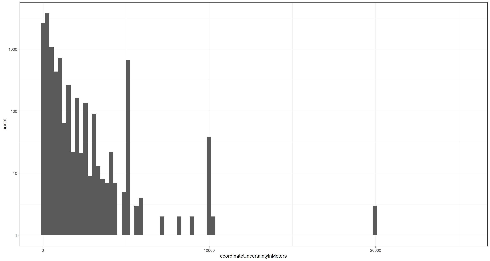
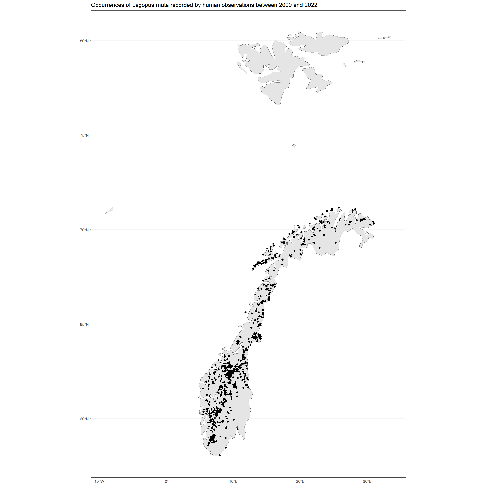
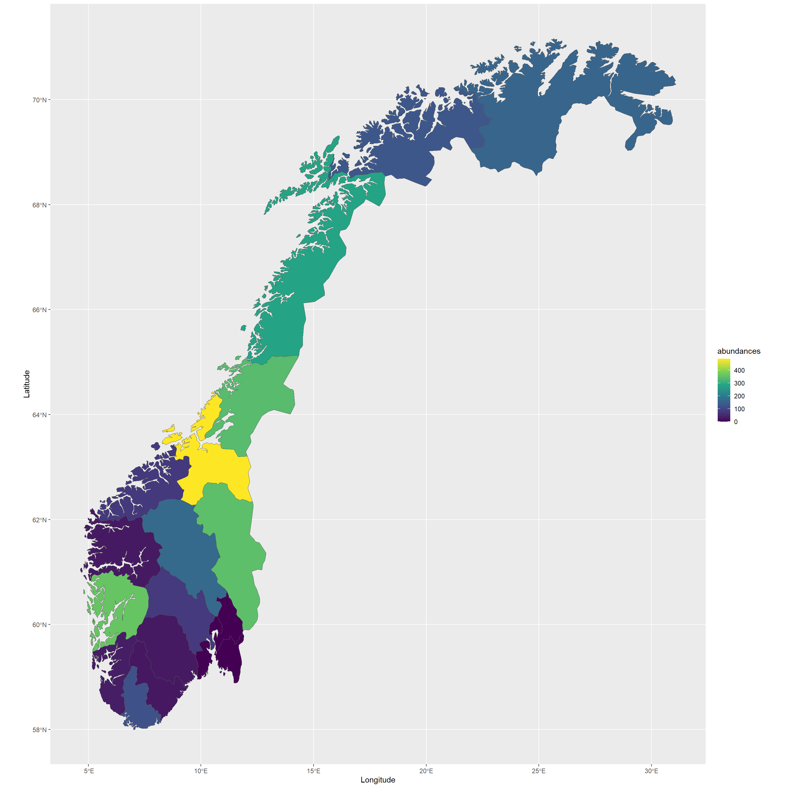
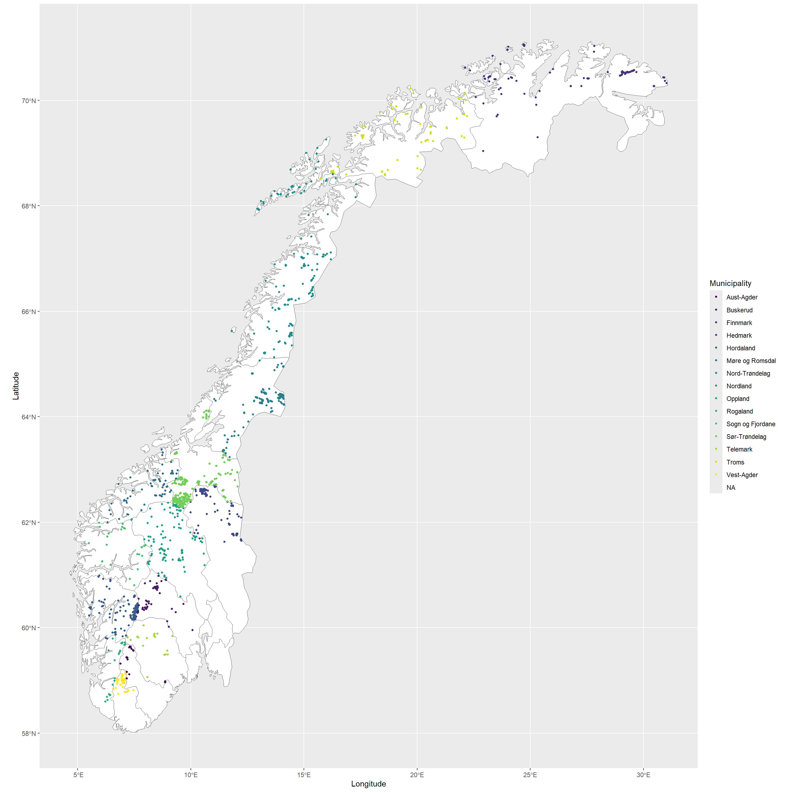

Handling Data with rgbif
Preamble, Package-Loading, and GBIF API Credential Registering (click here):
## Custom install & load function
install.load.package <- function(x) {
if (!require(x, character.only = TRUE)) {
install.packages(x, repos = "http://cran.us.r-project.org")
}
require(x, character.only = TRUE)
}
## names of packages we want installed (if not installed yet) and loaded
package_vec <- c(
"rgbif",
"knitr", # for rmarkdown table visualisations
"sp", # for spatialobject creation
"sf", # an alternative spatial object library
"ggplot2", # for visualistion
"raster", # for setting and reading CRS
"rnaturalearth" # for shapefiles of naturalearth
)
## executing install & load for each package
sapply(package_vec, install.load.package)
## rgbif knitr sp sf ggplot2 raster
## TRUE TRUE TRUE TRUE TRUE TRUE
## rnaturalearth
## TRUE
options(gbif_user = "my gbif username")
options(gbif_email = "my registred gbif e-mail")
options(gbif_pwd = "my gbif password")
First, we obtain and load the data we are interested in like such:
# Download query
res <- occ_download(
pred("taxonKey", sp_key),
pred_in("basisOfRecord", c("HUMAN_OBSERVATION")),
pred("country", "NO"),
pred("hasCoordinate", TRUE),
pred_gte("year", 2000),
pred_lte("year", 2020)
)
# Downloading and Loading
res_meta <- occ_download_wait(res, status_ping = 5, curlopts = list(), quiet = FALSE)
res_get <- occ_download_get(res)
res_data <- occ_download_import(res_get)
With this data in our R environment, we are ready to explore the data itself.
Initial Data Handling
Before working with the data you obtained via GBIF, it is usually good practice to first check that all data is as expected/in order and then either reduce the dataset further to fit quality standards and extract the relevant variables for your application.
Common Data Considerations & Issues
Common data considerations and quality flags are largely related to geolocations (but other quality markers do exist). These can be used as limiting factors in data discovery, when querying downloads as well as after a download is done and the data is loaded. Within the GBIF Portal, these options are presented in a side-bar like this:

As a matter of fact, we have already used the functionality by which to control for data quality markers when carrying out data discovery (occ_search(...)) and data download queries (occ_download(...)) by matching Darwin Core Terms like basisOfRecord or hasCoordinate.
For this exercise, let’s focus on some data markers that are contained in our already downloaded data set which we may want to use for further limiting of our data set for subsequent analyses. To do so, let’s consider the coordinateUncertaintyInMeters field by visualising the values we have obtained for each record in our occurrence data:
ggplot(res_data, aes(x = coordinateUncertaintyInMeters)) +
geom_histogram(bins = 1e2) +
theme_bw() +
scale_y_continuous(trans = "log10")

Note: The y-axis on the above plot is log-transformed and 439 of the underlying records do not report a value for coordinateUncertaintyInMeters thus being removed from the above visualisation.
What we find is that there exists considerable variation in confidence of individual occurrence locations and we probably want to remove those records which are assigned a certain level of coordinateUncertaintyInMeters. Let’s say 200 metres (after all, we are dealing with a mobile organism):
preci_data <- res_data[which(res_data$coordinateUncertaintyInMeters < 200), ]
This quality control leaves us with 2721 Lagopus muta records. A significant drop in data points which may well change our analyses and their outcomes drastically.
Extract a Subset of Cata-Columns
GBIF mediated data comes with a lot of attributes. These can be assessed readily via the Darwin Core or, within R via: colnames(...) (here with ... = res_data). Rarely will we need all of them for our analyses. For now, we will simply subset the data for a smaller set of columns which are often relevant for end-users:
data_subset <- preci_data[
,
c("scientificName", "decimalLongitude", "decimalLatitude", "basisOfRecord", "year", "month", "day", "eventDate", "countryCode", "municipality", "stateProvince", "taxonKey", "species", "catalogNumber", "hasGeospatialIssues", "hasCoordinate", "mediaType", "datasetKey")
]
knitr::kable(head(data_subset))
| scientificName | decimalLongitude | decimalLatitude | basisOfRecord | year | month | day | eventDate | countryCode | municipality | stateProvince | taxonKey | species | catalogNumber | hasGeospatialIssues | hasCoordinate | mediaType | datasetKey |
|---|---|---|---|---|---|---|---|---|---|---|---|---|---|---|---|---|---|
| Lagopus muta (Montin, 1781) | 7.679194 | 59.81584 | HUMAN_OBSERVATION | 2008 | 5 | 3 | 2008-05-03 | NO | Vinje | Telemark | 5227679 | Lagopus muta | 34904134 | FALSE | TRUE | b124e1e0-4755-430f-9eab-894f25a9b59c | |
| Lagopus muta (Montin, 1781) | 28.961315 | 70.46989 | HUMAN_OBSERVATION | 2017 | 6 | 5 | 2017-06-05 | NO | Finnmark | 5227679 | Lagopus muta | FALSE | TRUE | 8a863029-f435-446a-821e-275f4f641165 | |||
| Lagopus muta (Montin, 1781) | 23.689751 | 70.68865 | HUMAN_OBSERVATION | 2015 | 6 | 22 | 2015-06-22 | NO | Finnmark | 5227679 | Lagopus muta | FALSE | TRUE | StillImage | 8a863029-f435-446a-821e-275f4f641165 | ||
| Lagopus muta (Montin, 1781) | 8.628497 | 60.65505 | HUMAN_OBSERVATION | 2000 | 6 | 5 | 2000-06-05 | NO | Buskerud | 5227679 | Lagopus muta | FALSE | TRUE | StillImage | 8a863029-f435-446a-821e-275f4f641165 | ||
| Lagopus muta (Montin, 1781) | 24.720209 | 71.10924 | HUMAN_OBSERVATION | 2019 | 7 | 18 | 2019-07-18T10:41 | NO | Finnmark | 5227679 | Lagopus muta | 214152489 | FALSE | TRUE | StillImage | 50c9509d-22c7-4a22-a47d-8c48425ef4a7 | |
| Lagopus muta (Montin, 1781) | 24.729996 | 71.11087 | HUMAN_OBSERVATION | 2017 | 7 | 14 | 2017-07-14T10:26 | NO | Finnmark | 5227679 | Lagopus muta | 214152361 | FALSE | TRUE | StillImage | 50c9509d-22c7-4a22-a47d-8c48425ef4a7 |
Explore the Occurrence Data
Now that we have the data we might use for analyses ready, we can explore what the data itself contains.
Data Contents
Here are a few overviews of Lagopus muta abundances across different data attributes:
table(data_subset$year)
##
## 2000 2001 2002 2003 2004 2005 2006 2007 2008 2009 2010 2011 2012 2013 2014 2015 2016 2017
## 4 4 12 6 7 23 7 17 34 59 87 119 291 144 147 181 254 255
## 2018 2019 2020
## 372 382 316
table(data_subset$stateProvince)
##
## Agder Aust-Agder Buskerud
## 149 116 2 15
## Finnmark Hedmark Hordaland Innlandet
## 127 284 269 122
## Møre og Romsdal Nord Nord-Trøndelag Nordland
## 70 8 160 309
## Oppland Rogaland Sogn og Fjordane Sør
## 77 36 3 8
## Sør-Trøndelag Telemark Troms Troms og Finnmark
## 150 2 40 128
## Trøndelag Vest-Agder Vestfold og Telemark Vestland
## 405 36 25 134
## Viken Østfold
## 45 1
table(data_subset$mediaType)
##
## StillImage
## 2606 115
Spatial Data Handling
Most use-cases of GBIF make use of the geolocation references for data records either implicitly or explicitly. It is thus vital to be able to handle GBIF mediated data for spatial analyses. There exist plenty workshop (like this one) already for this topic so I will be brief.
Make SpatialPointsDataFrame
First, we can use the sf package to create SpatialPoints from our geo-referenced occurrence data:
options(digits = 8) ## set 8 digits (ie. all digits, not decimals) for the type cast as.double to keep decimals
data_subset <- as.data.frame(data_subset)
data_subset$lon <- as.double(data_subset$decimalLongitude) ## cast lon from char to double
data_subset$lat <- as.double(data_subset$decimalLatitude) ## cast lat from char to double
data_sf <- st_as_sf(data_subset, coords = c("lon", "lat"), remove = FALSE)
st_crs(data_sf) <- CRS("+proj=longlat +ellps=WGS84 +datum=WGS84 +no_defs +towgs84=0,0,0")
This data format lends itself well for analysing where occurrence have been recorded in relation to study parameters of choice (e.g., climatic conditions, land-use, political boundaries, etc.).
SpatialPoints and Polygons
In first instance, SpatialPoints can easily be used to create initial visualisations of spatial patterns:
## get background map
NO_shp <- rnaturalearth::ne_countries(country = "Norway", scale = "medium", returnclass = "sf")[, 1]
## make plot
ggplot() +
geom_sf(data = NO_shp) +
geom_sf(data = data_sf[, 1]) +
theme_bw() +
labs(title = "Occurrences of Lagopus muta recorded by human observations between 2000 and 2022")

The Coordinate Reference System (CRS)
Each spatial object in R is assigned a
Coordinate Reference System (CRS) which details how geolocational values are to be understood. For an overview of different CRSs, see
here.
In R, we can assess the CRS of most spatial objects as follows:
st_crs(data_sf)
## Coordinate Reference System:
## User input: BOUNDCRS[
## SOURCECRS[
## GEOGCRS["unknown",
## DATUM["World Geodetic System 1984",
## ELLIPSOID["WGS 84",6378137,298.257223563,
## LENGTHUNIT["metre",1]],
## ID["EPSG",6326]],
## PRIMEM["Greenwich",0,
## ANGLEUNIT["degree",0.0174532925199433],
## ID["EPSG",8901]],
## CS[ellipsoidal,2],
## AXIS["longitude",east,
## ORDER[1],
## ANGLEUNIT["degree",0.0174532925199433,
## ID["EPSG",9122]]],
## AXIS["latitude",north,
## ORDER[2],
## ANGLEUNIT["degree",0.0174532925199433,
## ID["EPSG",9122]]]]],
## TARGETCRS[
## GEOGCRS["WGS 84",
## DATUM["World Geodetic System 1984",
## ELLIPSOID["WGS 84",6378137,298.257223563,
## LENGTHUNIT["metre",1]]],
## PRIMEM["Greenwich",0,
## ANGLEUNIT["degree",0.0174532925199433]],
## CS[ellipsoidal,2],
## AXIS["latitude",north,
## ORDER[1],
## ANGLEUNIT["degree",0.0174532925199433]],
## AXIS["longitude",east,
## ORDER[2],
## ANGLEUNIT["degree",0.0174532925199433]],
## ID["EPSG",4326]]],
## ABRIDGEDTRANSFORMATION["Transformation from unknown to WGS84",
## METHOD["Geocentric translations (geog2D domain)",
## ID["EPSG",9603]],
## PARAMETER["X-axis translation",0,
## ID["EPSG",8605]],
## PARAMETER["Y-axis translation",0,
## ID["EPSG",8606]],
## PARAMETER["Z-axis translation",0,
## ID["EPSG",8607]]]]
## wkt:
## BOUNDCRS[
## SOURCECRS[
## GEOGCRS["unknown",
## DATUM["World Geodetic System 1984",
## ELLIPSOID["WGS 84",6378137,298.257223563,
## LENGTHUNIT["metre",1]],
## ID["EPSG",6326]],
## PRIMEM["Greenwich",0,
## ANGLEUNIT["degree",0.0174532925199433],
## ID["EPSG",8901]],
## CS[ellipsoidal,2],
## AXIS["longitude",east,
## ORDER[1],
## ANGLEUNIT["degree",0.0174532925199433,
## ID["EPSG",9122]]],
## AXIS["latitude",north,
## ORDER[2],
## ANGLEUNIT["degree",0.0174532925199433,
## ID["EPSG",9122]]]]],
## TARGETCRS[
## GEOGCRS["WGS 84",
## DATUM["World Geodetic System 1984",
## ELLIPSOID["WGS 84",6378137,298.257223563,
## LENGTHUNIT["metre",1]]],
## PRIMEM["Greenwich",0,
## ANGLEUNIT["degree",0.0174532925199433]],
## CS[ellipsoidal,2],
## AXIS["geodetic latitude (Lat)",north,
## ORDER[1],
## ANGLEUNIT["degree",0.0174532925199433]],
## AXIS["geodetic longitude (Lon)",east,
## ORDER[2],
## ANGLEUNIT["degree",0.0174532925199433]],
## ID["EPSG",4326]]],
## ABRIDGEDTRANSFORMATION["Transformation from unknown to WGS84",
## METHOD["Geocentric translations (geog2D domain)",
## ID["EPSG",9603]],
## PARAMETER["X-axis translation",0,
## ID["EPSG",8605]],
## PARAMETER["Y-axis translation",0,
## ID["EPSG",8606]],
## PARAMETER["Z-axis translation",0,
## ID["EPSG",8607]]]]
st_crs(NO_shp)
## Coordinate Reference System:
## User input: WGS 84
## wkt:
## GEOGCRS["WGS 84",
## DATUM["World Geodetic System 1984",
## ELLIPSOID["WGS 84",6378137,298.257223563,
## LENGTHUNIT["metre",1]]],
## PRIMEM["Greenwich",0,
## ANGLEUNIT["degree",0.0174532925199433]],
## CS[ellipsoidal,2],
## AXIS["latitude",north,
## ORDER[1],
## ANGLEUNIT["degree",0.0174532925199433]],
## AXIS["longitude",east,
## ORDER[2],
## ANGLEUNIT["degree",0.0174532925199433]],
## ID["EPSG",4326]]
When dealing with data in specific areas of the world or wanting to match occurrence data to other products with specific CRSs, it may be prudent to reproject the SpatialPoints occurrence data object. We can use sf::st_transform) to do so (this is reprojecting to the same CRS the data is already in):
sf::st_transform(data_sf, CRS("+proj=longlat +ellps=WGS84 +datum=WGS84 +no_defs +towgs84=0,0,0"))
## Simple feature collection with 2721 features and 20 fields
## Geometry type: POINT
## Dimension: XY
## Bounding box: xmin: 5.488913 ymin: 58.065259 xmax: 31.020815 ymax: 71.170652
## Geodetic CRS: BOUNDCRS[
## SOURCECRS[
## GEOGCRS["unknown",
## DATUM["World Geodetic System 1984",
## ELLIPSOID["WGS 84",6378137,298.257223563,
## LENGTHUNIT["metre",1]],
## ID["EPSG",6326]],
## PRIMEM["Greenwich",0,
## ANGLEUNIT["degree",0.0174532925199433],
## ID["EPSG",8901]],
## CS[ellipsoidal,2],
## AXIS["longitude",east,
## ORDER[1],
## ANGLEUNIT["degree",0.0174532925199433,
## ID["EPSG",9122]]],
## AXIS["latitude",north,
## ORDER[2],
## ANGLEUNIT["degree",0.0174532925199433,
## ID["EPSG",9122]]]]],
## TARGETCRS[
## GEOGCRS["WGS 84",
## DATUM["World Geodetic System 1984",
## ELLIPSOID["WGS 84",6378137,298.257223563,
## LENGTHUNIT["metre",1]]],
## PRIMEM["Greenwich",0,
## ANGLEUNIT["degree",0.0174532925199433]],
## CS[ellipsoidal,2],
## AXIS["latitude",north,
## ORDER[1],
## ANGLEUNIT["degree",0.0174532925199433]],
## AXIS["longitude",east,
## ORDER[2],
## ANGLEUNIT["degree",0.0174532925199433]],
## ID["EPSG",4326]]],
## ABRIDGEDTRANSFORMATION["Transformation from unknown to WGS84",
## METHOD["Geocentric translations (geog2D domain)",
## ID["EPSG",9603]],
## PARAMETER["X-axis translation",0,
## ID["EPSG",8605]],
## PARAMETER["Y-axis translation",0,
## ID["EPSG",8606]],
## PARAMETER["Z-axis translation",0,
## ID["EPSG",8607]]]]
## First 10 features:
## scientificName decimalLongitude decimalLatitude basisOfRecord year
## 1 Lagopus muta (Montin, 1781) 7.679194 59.815843 HUMAN_OBSERVATION 2008
## 2 Lagopus muta (Montin, 1781) 28.961315 70.469890 HUMAN_OBSERVATION 2017
## 3 Lagopus muta (Montin, 1781) 23.689751 70.688646 HUMAN_OBSERVATION 2015
## 4 Lagopus muta (Montin, 1781) 8.628497 60.655046 HUMAN_OBSERVATION 2000
## 5 Lagopus muta (Montin, 1781) 24.720209 71.109243 HUMAN_OBSERVATION 2019
## 6 Lagopus muta (Montin, 1781) 24.729996 71.110875 HUMAN_OBSERVATION 2017
## 7 Lagopus muta (Montin, 1781) 14.563245 67.088208 HUMAN_OBSERVATION 2017
## 8 Lagopus muta (Montin, 1781) 9.291491 62.433117 HUMAN_OBSERVATION 2020
## 9 Lagopus muta (Montin, 1781) 9.466869 62.722573 HUMAN_OBSERVATION 2004
## 10 Lagopus muta (Montin, 1781) 11.736154 62.914320 HUMAN_OBSERVATION 2002
## month day eventDate countryCode municipality stateProvince taxonKey
## 1 5 3 2008-05-03 NO Vinje Telemark 5227679
## 2 6 5 2017-06-05 NO Finnmark 5227679
## 3 6 22 2015-06-22 NO Finnmark 5227679
## 4 6 5 2000-06-05 NO Buskerud 5227679
## 5 7 18 2019-07-18T10:41 NO Finnmark 5227679
## 6 7 14 2017-07-14T10:26 NO Finnmark 5227679
## 7 6 17 2017-06-17 NO Beiarn Nordland 5227679
## 8 7 31 2020-07-31 NO Oppdal Trøndelag 5227679
## 9 9 11 2004-09-11 NO Oppdal Trøndelag 5227679
## 10 7 27 2002-07-27 NO Trøndelag 5227679
## species catalogNumber hasGeospatialIssues hasCoordinate mediaType
## 1 Lagopus muta 34904134 FALSE TRUE
## 2 Lagopus muta FALSE TRUE
## 3 Lagopus muta FALSE TRUE StillImage
## 4 Lagopus muta FALSE TRUE StillImage
## 5 Lagopus muta 214152489 FALSE TRUE StillImage
## 6 Lagopus muta 214152361 FALSE TRUE StillImage
## 7 Lagopus muta 34314978 FALSE TRUE
## 8 Lagopus muta 33833573 FALSE TRUE StillImage
## 9 Lagopus muta 32243615 FALSE TRUE
## 10 Lagopus muta BA00022793-106 FALSE TRUE
## datasetKey lon lat geometry
## 1 b124e1e0-4755-430f-9eab-894f25a9b59c 7.679194 59.815843 POINT (7.679194 59.815843)
## 2 8a863029-f435-446a-821e-275f4f641165 28.961315 70.469890 POINT (28.961315 70.46989)
## 3 8a863029-f435-446a-821e-275f4f641165 23.689751 70.688646 POINT (23.689751 70.688646)
## 4 8a863029-f435-446a-821e-275f4f641165 8.628497 60.655046 POINT (8.628497 60.655046)
## 5 50c9509d-22c7-4a22-a47d-8c48425ef4a7 24.720209 71.109243 POINT (24.720209 71.109243)
## 6 50c9509d-22c7-4a22-a47d-8c48425ef4a7 24.729996 71.110875 POINT (24.729996 71.110875)
## 7 b124e1e0-4755-430f-9eab-894f25a9b59c 14.563245 67.088208 POINT (14.563245 67.088208)
## 8 b124e1e0-4755-430f-9eab-894f25a9b59c 9.291491 62.433117 POINT (9.291491 62.433117)
## 9 b124e1e0-4755-430f-9eab-894f25a9b59c 9.466869 62.722573 POINT (9.466869 62.722573)
## 10 492d63a8-4978-4bc7-acd8-7d0e3ac0e744 11.736154 62.914320 POINT (11.736154 62.91432)
Classifying Spatial Data
Let’s say, for example, we want to quantify abundances of Lagopus muta across political regions in Norway:
## Obtain sf object
NO_municip <- rnaturalearth::ne_states(country = "Norway", returnclass = "sf") # get shapefiles for Norwegian states
NO_municip <- sf::st_crop(NO_municip, extent(4.5, 31.5, 50, 71.5)) # crop shapefile to continental Norway
## Identify overlap of points and polygons
cover_sf <- st_intersects(NO_municip, data_sf)
names(cover_sf) <- NO_municip$name
## report abundances
abundances_municip <- unlist(lapply(cover_sf, length))
knitr::kable(t(sort(abundances_municip, decreasing = TRUE)))
| Sør-Trøndelag | Hordaland | Hedmark | Nord-Trøndelag | Nordland | Oppland | Finnmark | Troms | Vest-Agder | Buskerud | Møre og Romsdal | Rogaland | Telemark | Sogn og Fjordane | Aust-Agder | Akershus | Østfold | Oslo | Vestfold |
|---|---|---|---|---|---|---|---|---|---|---|---|---|---|---|---|---|---|---|
| 489 | 361 | 348 | 340 | 286 | 168 | 160 | 132 | 122 | 79 | 78 | 33 | 28 | 27 | 25 | 0 | 0 | 0 | 0 |
Looks like there are hotspots for Lagopus muta in SørTrøndelag and Hordaland - could this be sampling bias or effects of bioclimatic niche preferences and local environmental conditions? Questions like these you will be able to answer with additional analyses which are beyond the scope of this workshop.
Let’s visualise these abundances:
NO_municip$abundances <- abundances_municip
ggplot(data = NO_municip) +
geom_sf(aes(fill = abundances)) +
scale_fill_viridis_c() +
labs(x = "Longitude", y = "Latitude", col = "Abundance")

Finally, let’s consider wanting to identify for each data record and attach to the data itself which state it falls into. We can do so as follows (not necessarily the most elegant way:
## create a dataframe of occurrence records by rownumber in original data (data_subset) and state-membership
cover_ls <- lapply(names(cover_sf), FUN = function(x) {
if (length(cover_sf[[x]]) == 0) {
points <- NA
} else {
points <- cover_sf[[x]]
}
data.frame(
municip = x,
points = points
)
})
cover_df <- na.omit(do.call(rbind, cover_ls))
## attach state-membership to original data, NAs for points without state-membership
data_subset$municip <- NA
data_subset$municip[cover_df$points] <- cover_df$municip
## visualise the result
ggplot(data = NO_municip) +
geom_sf(fill = "white") +
geom_point(
data = data_subset, size = 1,
aes(x = decimalLongitude, y = decimalLatitude, col = municip)
) +
scale_colour_viridis_d() +
labs(x = "Longitude", y = "Latitude", col = "Municipality")

Let’s say we feed these data into an analysis which runs to completion and we want to report on our findings. What’s next? Citing the data we used.
Session Info
## R version 4.4.0 (2024-04-24 ucrt)
## Platform: x86_64-w64-mingw32/x64
## Running under: Windows 11 x64 (build 22631)
##
## Matrix products: default
##
##
## locale:
## [1] C
##
## time zone: Europe/Oslo
## tzcode source: internal
##
## attached base packages:
## [1] stats graphics grDevices utils datasets methods base
##
## other attached packages:
## [1] rnaturalearth_1.0.1 raster_3.6-26 ggplot2_3.5.1 sf_1.0-17
## [5] sp_2.1-4 knitr_1.48 rgbif_3.8.1
##
## loaded via a namespace (and not attached):
## [1] gtable_0.3.6 xfun_0.47
## [3] bslib_0.8.0 lattice_0.22-6
## [5] vctrs_0.6.5 tools_4.4.0
## [7] generics_0.1.3 curl_5.2.2
## [9] tibble_3.2.1 proxy_0.4-27
## [11] fansi_1.0.6 highr_0.11
## [13] pkgconfig_2.0.3 R.oo_1.26.0
## [15] KernSmooth_2.23-22 data.table_1.16.0
## [17] lifecycle_1.0.4 R.cache_0.16.0
## [19] farver_2.1.2 compiler_4.4.0
## [21] stringr_1.5.1 munsell_0.5.1
## [23] terra_1.7-78 codetools_0.2-20
## [25] htmltools_0.5.8.1 class_7.3-22
## [27] sass_0.4.9 yaml_2.3.10
## [29] lazyeval_0.2.2 pillar_1.9.0
## [31] jquerylib_0.1.4 whisker_0.4.1
## [33] R.utils_2.12.3 classInt_0.4-10
## [35] cachem_1.1.0 wk_0.9.4
## [37] rnaturalearthdata_1.0.0 styler_1.10.3
## [39] tidyselect_1.2.1 digest_0.6.37
## [41] stringi_1.8.4 dplyr_1.1.4
## [43] purrr_1.0.2 bookdown_0.40
## [45] labeling_0.4.3 fastmap_1.2.0
## [47] grid_4.4.0 colorspace_2.1-1
## [49] cli_3.6.3 magrittr_2.0.3
## [51] triebeard_0.4.1 crul_1.5.0
## [53] utf8_1.2.4 e1071_1.7-16
## [55] withr_3.0.1 scales_1.3.0
## [57] bit64_4.0.5 oai_0.4.0
## [59] rmarkdown_2.28 httr_1.4.7
## [61] bit_4.0.5 blogdown_1.19
## [63] rnaturalearthhires_1.0.0.9000 R.methodsS3_1.8.2
## [65] evaluate_0.24.0 viridisLite_0.4.2
## [67] s2_1.1.7 urltools_1.7.3
## [69] rlang_1.1.4 Rcpp_1.0.13
## [71] httpcode_0.3.0 glue_1.7.0
## [73] DBI_1.2.3 xml2_1.3.6
## [75] jsonlite_1.8.8 R6_2.5.1
## [77] plyr_1.8.9 units_0.8-5